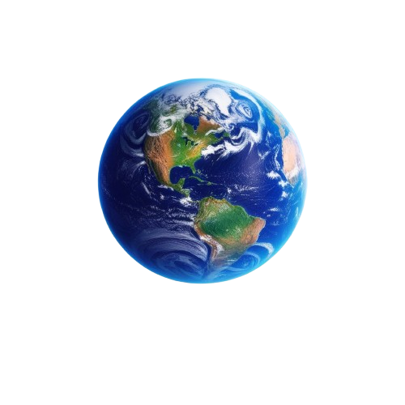

O que é Sustentabilidade
O que é sustentabilidade: Sustentabilidade é o conceito de usar os recursos naturais de
forma que atendam às necessidades do presente sem comprometer
a capacidade das futuras gerações de suprirem suas próprias
necessidades. Isso envolve cuidar do meio ambiente, economizar
recursos naturais, reduzir o desperdício e promover o bem-estar
social e econômico.Existem três pilares principais da sustentabilidade:
o ambiental, o social e o econômico. O pilar ambiental foca na preservaçãodos recursos
naturais, como água, ar e florestas. O pilar social envolve garantir que
todos tenham acesso a condições de vida dignas, como educação e saúde. Já o
pilar econômico busca criar sistemas que gerem riqueza de maneira justa e
eficiente,sem explorar os recursos de maneira predatória.A sustentabilidade
é importante porque, ao cuidar do meio ambiente e das pessoas,garantimos um
futuro mais equilibrado e saudável para todos.
